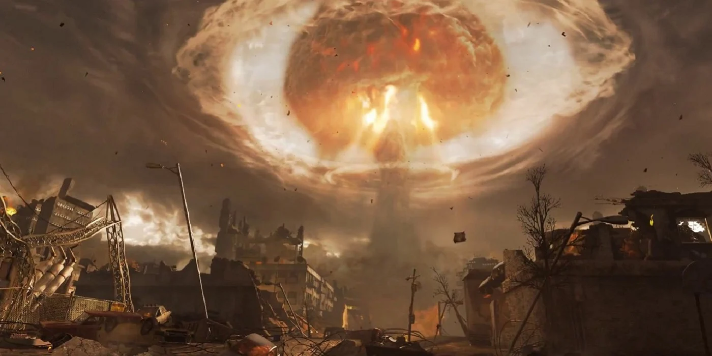

Call of Duty: Impact
I would not have written this essay if I did not think Modern Warfare and Modern Warfare changed the gaming industry at large.

Outside of Halo 2, which was only available to Xbox owners, shooters were never the dominant genre on console. Fast forward to 2009, and Call of Duty has transformed it into the norm. In fact, it would remain the norm up until around 2015, where genre variety returned and the industry (for the most part) went back to normal.
Call of Duty's influence was everywhere during this time. If you'd like to get a general idea of just how far-reaching Call of Duty's influence was, I've included a link to an article explaining it.
External Links